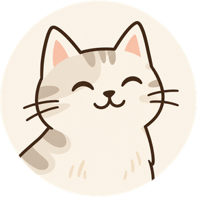

Предложение дизайна · текущие шрифты, цвета и иконки

Кошка · Сибирская · 6 летВместе 2110 дней
Курица, рыба, кроме лосося
ХБП
1 таблетка
с 15 октября · постоянно
Время приёма задаёте вы: приложениене советует ни время, ни дозу.
Справа после отметки — снять отметку конкретного приёма. Курс лекарства не отменяется.